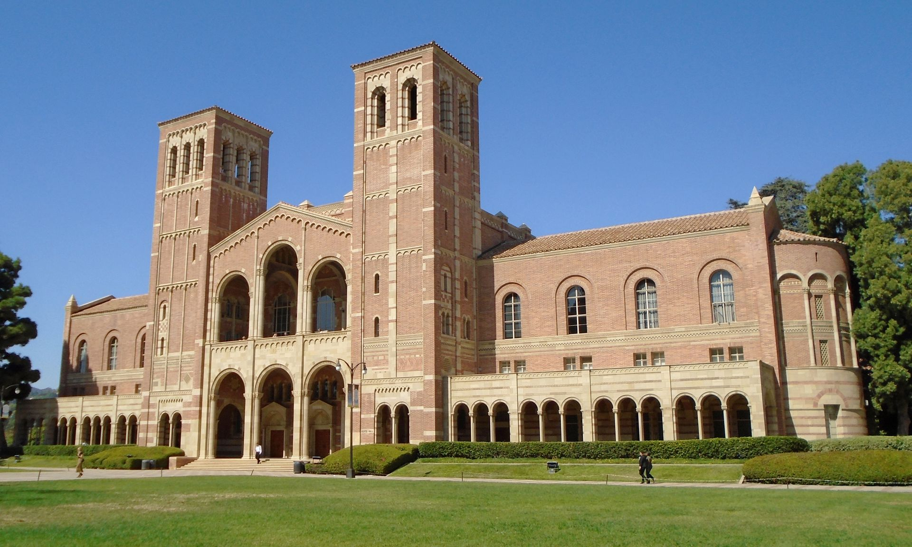

Field A · Medicine
AI × Brain & Neuroscience
The most clinically mature thread — deep learning on MRI/PET, the first Alzheimer's blood test cleared in 2025 — yet AI stays decision-support, not autonomous diagnosis.
EEG sleep-spindle

state: |ψ⟩ superposition
Two are medicine, two are the quantum — each maps to a waveform that recurs as you read.
Field A · Medicine
The most clinically mature thread — deep learning on MRI/PET, the first Alzheimer's blood test cleared in 2025 — yet AI stays decision-support, not autonomous diagnosis.
EEG sleep-spindle
Field B · Medicine
AI is accelerating pre-clinical work and reaching into Traditional Chinese Medicine — but as of 2025 no AI-discovered drug has reached market.
mass-spectrum peaks
Field C · Quantum
The least mature, the most discussed — today's noisy devices can't yet model real drug molecules; serious value is widely placed in the 2030s.
diffraction comb
Field D · Quantum
Convergence is institutionalizing at top universities — quantum sensing for biomagnetic imaging, instrumentation, materials. Early, and exactly this delegation's frontier.
coherence
Nine delegates from Taiwan spend sixty days at UCLA — July 6 to September 3, 2026 — reading the working edge where biomedical engineering meets quantum science. This site is their field journal.